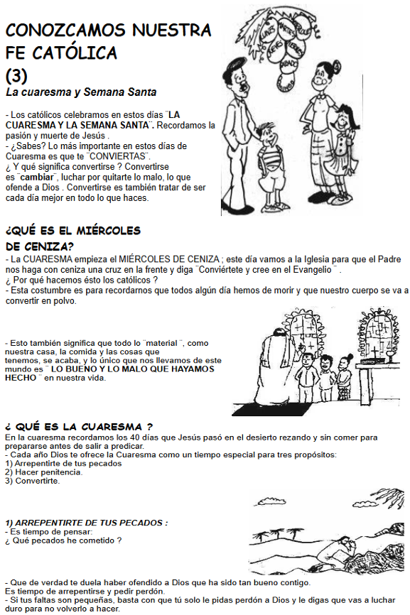
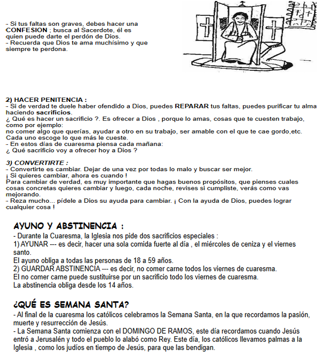

El evanagelio es la revelación, en Jesucristo, de la misericordia de Dios con los pecadores(cf Lc 151). El ángel anuncia a José: "Tú le pondrás por nombres Jesús, porque él salvará a su pueblo de sus pecados" (Mt 1,21). Y en la institución de la Eucaristía, sacramento de la redención, Jesús dice: "Esta es la sangre de la alianza, que va a ser derramada por muchos para remisión de los pecados" (Mt 26,28). La acogida de la misericordia divina exige de nostros la confesión de nuestras fñtas. "Si decimos: no tenemos pecado, nos engañamos y la verdad no está en nosotros. Si reconocemos nuestros pecados y purificarnos de toda injusticia" (1 Jn 1,8-9).
El pecado es una falta contra la razón, la verdad, la conciencia recta; es faltar al amor verdadero para Dios y para con el prójimo, a causa de un apego perverso a ciertos bienes. Hiere la naturaleza del hombre y atenta contra la solidaridad humana. Ha sido definido como una "una palabra, un acto o un deseo contrarios a la ley eterna" (San Agustín, contra Faustum,6 manichoeum, 22,27;Santo Tomás de Aquino, Summa thelogieae, 1-11,71,6)
El pecado es una ofensa a Dios:"Contra ti, contra tu sólo he pecado, lo malo a tus ojos cometí" (Sal 51,6). El pecado se levanta contra el amor que Dios nos tiene y aparta de él nuestros corazones. Como el primer pecado, es una desobediencia, una rebelión contra Dios por el deseo de hacerse "como dioses", pretendiendo conocer y deteminar el bien y el mal. El pecado es así "amor de si hasta el desprecio de Dios" (San Agustín, De civitate Dei, 1,14,28). Por esta exaltación orgullosa de sí, el pecado es diametralmente opuesto a la obediencia de Jesús que realiza la salvación (cf flp 2,6-9).
La variedad de pecados es grande. La escritura contiene varias listas. La carta a los Gálatas opone las obras de la carne al fruto del Espíritu:"Las obras de la carne son las conocidad:fornicación, impureza, libertinaje,idolatría,hechicería,odios,discordia,celos,iras,recillas,divisiones,disensiones,envidias,embriagueces,orgías y cosas semejantes, sobre los cuales os prevengo como ya os previne, que quienes hacen tales cosas no heredarían el Reino de Dios" (Ga 5,19-21;cf Rm 1,28-32;1 Co 6,9-10;ef 5,3-5;Col 3,5-8; 1 Tm 1,9-10;2 Tm 3,2-5).
Se pueden distinguier los pecados según su objeto, como en todo acto humano, o según las virtudes a las que se oponen, por exceso o defecto, o según los mandamientso que quebrantan. Se los puede agrupar también según que se refieran a Dios, al prójimo o sí mismos;se los uede dividir en pecados espirituales y carnales.
Concepto: Es un sacramento de la Iglesia Católica en el que una persona, normalmente un niño aproximadamente a los 9 años de edad, recibe por primera vez la Eucaristía (el pan consagrado, que representa el Cuerpo de Cristo).
Requisitos:
Ser bautizado
Catequesis Clases religiosas donde se enseña sobre Dios, Jesús, la misa, los mandamientos y el valor de la Eucaristía.
Primera confesión: Antes de comulgar por primera vez, el niño debe confesarse.
Compromiso cristiano: Se espera que el niño entienda la importancia de participar en la misa y seguir creciendo en la fe.
¿Qué significa?
En el contexto religioso, "credo" se refiere a una declaración de fe o un conjunto de creencias fundamentañes. En el cristianismo, el credo es una oración que resume los principales dogmas de la fe católica. También puede referirse a un conjuntoo de principios o convicciones que guian la creencia o conducta de una persona o grupo.
El credo en el cristianismo:
declaración de fe:
Es una afirmación de las creencias centrales del cristianismo, como la e xistencia de Dios, la naturaleza de Jesucristo, y la creencia en el Espíritu Santo.
Credo apostólico(Símbolo de los apóstoles)
Creo en Dios,
Padre todo poderoso,
Creador del cielo y la tierra.
Creo en Jesucristo, su único hijo,
Nuestro señor.
que fue concebido por obra y gracia
del espíritu santo.
Nació de Santa María vírgen,
padeció bajo el poder de Poncio Pilato.
fue crucificado,
muerto y sepultado,
descendió a los infiernos,
al tercer día resucitó de entre los muertos.
subió a los cielos
y está sentado a la derecha
de Dios, Padre todopoderoso.
Desde ahí ha de venir a
juzgar a vivos y muertos.
Creo en el Espíritu Santo,
La santa iglesia católica,
la comunión de los santos,
el perdón de los pecados,
la resurrección de la carne
y la vida eterna.
Amén.
Los valores cristianos son principios éticos y morales que se derivan de las enseñanzas de Jesucristo y la Biblia. Estos valores incluyen el amor, la compasión, la humildad, la honestidad y el perdón, entre otros. Son fundamentales porque guian el comportamineto de las personas y fomentan una convivencia armoniosa en la sociedad. Vivir según estos prinicipios no solo beneficia al individuo, sino que también tiene un impacto positivo en su entorno. Mejores regalos para tus seres queridos.
En un mundo cada vez más individualista, los valores cristianos ofrecen un marco para vivir con propósito y significado. Ayudan a las personas a tomar decisiones alineadas con la justicia y la bondad, incluso en situaciones difíciles. Además, estos valores promueven la construcción de relaciones saludables y la resolución pacífica de conflictos.
Mejores regalos para tus seres queridos
El amor es uno de los valores cristianos más destacados. Jesús enseñó que el amor al prójimo es esencial para vivir una vida plena. Este amor no selimita a los entimientos, sino que se manifiesta en acciones concretas,como ayudar a los necesitados, escuchar a quienes sufren y perdonan a quienes nos han hecho daño.
La humildad es otro valor clave en el cristianismo. Implica reconocer nuestras limitaciones y valorar a los demás por encima de nosotros mismos. Practicar la hunildad ayuda a evitar el orgullo y la arrogancia, lo que facilita la construcción de relaciones basadas en el respeto mutuo. Mejores regalos para tu seres queridos.
Los valores cristianos actúan como una brújula moral en la toma de decisiones. Cuando una persona se guía por pricipios como la honestidad, la integridad y la justicia, es más probable que tome decisiones que beneficien no solo a sí misma, sino también a los demás. Por ejemplo, en el ámbito laboral, un líder que pratica la justicia y la equidad creará un ambiente de trabajo más positivo y productivo.
Actividad: La sgte clase deben presentar un triptico en grande hecho en una cartulina y donde plasmaran el tema de valores cristianos todo lo que investiguen debe de ir ahí junto con sus imágenes solo es presentación para el miércoles 16
Los misterios de la vida pública de Jesús se refieren a eventos claves de su ministerio terrenal que revelan su identidad divina y su propósito redentos. Estos incluyen el bautismo, las tentaciones en el desierto, la predicación del reino de Dios, la transfiguración, la entrada triunfal en Jerusalén y los eventos finales de la pasión y muerte.
Eventos clave de la vidad pública de Jesús:
Bautismo en el Jordán:
Jesús se somete al bautizo de Juan, marcando el inicio de su ministerio público y la manifestación de la santísima santidad.
Tentaciones en el desierto:
Jesús es tentado por satanás demostrando su fidelidad a DIos y su capacidad para vencer el mal.
Perdicación del reino de Dios:
Jesús anuncia la llegada de Dios, invitando a la conversión y ofreciendo la salvación a todos.
Milagros:
Jesús realiza numerosos milagros, como curaciones, exorcismo y resurreeciones, mostrando su poder divino y su compasión por la humanidad.
Transfiguración:
Jesús se manifiesta en glora ante sus discípulos, revelando su naturaleza divina y fortaleciendo su fe.
Entrada triunfal en Jerusalén:
Jesús entra en Jerusalén aclamado como rey, anticipando su victoria sobre la muerte y el pecado.
Pasión y muerte:
Los eventos de la pasión, incluyendo la última cena,el arresto, el juicio, la crucifixión y la muerte de Jesús, son centrales para la fe cristiana, ya que através de ellos se realiza la redención de la humanidad.
La vida pública de Jesús es im ,osterop em eñ semtodp qie receña la profundidad del amor y la sabiduría de Dios, y al mismo tiempo nos invita a participar en su plan de salvación.
A. Motivación
Al intentar explicar el Reino de Dios, hemos utilizado algunas comparaciones. Y todos nos hemos dado cuenta de quye estas comparaciones y todos nos hemos dado cuenta de que estas comparaciones las propuso el mismo Jesús. En efecto , Jesús no hizo grandes y complicados discursos, sino que recurrió al uso de lo que él mismo llamó <
Las parábolas son comparaciones o relatos breces sacados de la vida de cada día, que a primera vista, parecen totalmente inofensivos. Al escucharlos, el oyente entra confiado en ellos. Pero, cuando está dentro y ha tomado parte, salta de pronto un interrogante y el oyente, por poco sincero y avispado que sea, se ve kuteraknebte atraoadi, se da cuenta de que esa historia va dirigida a él y le obliga a definrse. Jesús utilizó este lenguaje porque querñua llegar al mayor número posible de oyentes, hasta kis nás sencillos. Pero también para hacernos caer en la cuenta de que el Reino tenía que ver con la vida de cada día; más aún que se realizaba en la vida misma.
B - Contenido doctrinal
En este tema el orden lógico que se seguirá es el siguuiente: Primerose verá que es una parábola, sus rasgos propios que la hacen distinta de otros géneros literarios(Punto 1), luego el uso y sentido que hace Jesús de ellla (Punto 2), posteriormente la clasificación de las parábolas del Señor (Punto 3) y finalmente, como debemos interpretarla (Punto 4). Con este tema queremos demostrar que Jesús, haciendo uso de los recursos de su época, fue un excelente predicador de lka palabra de Dios con un mensaje que aún sorprende hoy en día.
¿Qué es una parábola?
La parábolacomo indica su nombre (del griego parabollé), ese una especie de problema propuesto a los que escuchan, mediante una semejanza o comparación , más o menos desarrollada.
La parábola constituye un género literarioen que se elige un fenómeno de la naturaleza, un incidente, una escena de la vida ordinaria, un hecho real o imaginaario, pero absolutamente posible, probable y aun corriente. Y bajo el relato que de ellos se hace, se envuelve omo en un velo materiral la idea que se quiere destacar, ilustrar o comprobar, ya sea de orden moral, religioso o sobrenatural. Sirven de términode comparaicón, colocando al nuvel o al lado de la verdad que se intenta inculcar una imágen, que la hace mñas sensible y viva.
Otros géneros literarios semejantes a la parábola
La parábola viene hacer la traducción del vocablo hebreo << Mashal >> del antiguo testamento. El Mashal tiene un conjunto de significados más amplioo que el que encierra la parábola ya que puede significar refrán, proverbio, relato, etc. (Ver p. ej. Ez 17,1-5). Esto nos ayudará a comprender el significado de las parábolas de Jesús.
Pero existe otro género literario, quizá contemporáneo al Señor, que los los << meshalim rabínicos>>. Estos tienen una forma muy semejante a ka de kas exoresuibes de Cristo. Pero los meshalim son rígidos y pobres de medios que contrastan con la riqueza imaginativa y de percepción que venos en laas parábolas de Jesú.
Jesús hablaba en parábolas
Sin las parábolas, nos quedamos son mensaje.
Está fuera de toda duda que Jesús hablabal a la gente habitualmente en parábolas. Las citas de lso evangelios sonóticos que lo afirman son numerosos(cf Mr 13,3;13,10;34;13,35;13,53;22,1;Mc 3,23;4,2;4,2;4,2;4,10;4,11;4,13;4,33;4,34;12,1;Lc 8,10). Incluso Mc 4,34 y t 13,34 llegan a decir que Jesús solamente les hablaba en parábolas.
Hay que tener en cuenta que de Jesús nos intesan tres cosas: Saber quién es, que hace y qué dice. Si prescindimos de las parábolas prácticamente no podríamos saber lo que decía Jesús; y si nos quedamos sin saber que dice, gran parte de la buena noticia desaparece. Por lo tanto, estudiar laas parábolas es lo mismo que enterase del mensaje de Jesús, y prescindir de ellas es lo mismo que no conocer ese mensaje.
¿Porqué Jesús hablaba en parábolas?
Ya hemos visto que Mateo 13,34 y Marcos 4,34 llegan a decir que Jesús hablaba a la gente solamente en parabolas. A continuación veremos que estos dos textos paralesl tienen gran importancia, porque expican porqué lo hacía.
| Marcos 4,33-34 | Mateo 13,34-35 |
|---|---|
| Con muchas parábolas semejantes les exponía el mensaje, adaptado a su capacidad. Sin parábolas no les exponía nada, pero en privado, a sus discípulos, les explicaba todo. | Todo esto se los explicó Jesús a la multitud con parábolas; y sin parábolas no les explicó nada. |
- Es la manifestación de Dios al hombre por medio de la cual Dios se comunica, nos da a conocer su plan que tiene para la humanidad.
- La revelación es un testimonio salvítico.
Existen 2 tipos de revelación
Revelación natural:
Por esta revelación sabemos que Dios existe y tebenis cibicunuebtis de Dios a partir de la creación del hombre.
Revelación sobrenatural:
En esta revelación conocemos el designio de su voluntad, la salvación.
La fuente de la revelación es Cristo y de él "única fuente divina" como formando una sola, la sagrada tradición y la sagrada escritura.
Adviento deriva del latin: significa venida, para nosotros los cristianos representa la llegada de Jesucristo, es el tiempo que precede en la navidad, dándote tiempo para el arrepentimiento. El adviento te lleva a recordar el pasado, viviendo intensamente el presente para lograr un futuro lleno de felicidad, el morado representa el color litúrgico del adviento dando el significado de penitencia.
características:
- Se celebra la venida del salvador, hace más de 2 mil años.
- Se reconce la presencia de Jesús en el día através de las escrituras, comunidad y necesitados.
- Se espera su regreso glorioso a final de los tiempos.
- Es un tiempo de espera activa marcada por la esperanza
- Se invita a la conversión espritual preparándose para recibir al señor como un corazón renovado, reflexión y oración: Es un mometo de oración, arrepentimiento y alegría.
Tarea:
Lee la parábola del salvador Mateo 13:1-19,18-23.
¿Que nos revela la cita bíblica.?
¿A quién representa la semilla.?
¿A quién representa los tipos de terrenos.?
¿Cuántos tipos de terrenos hay en la parábola.?
¿Qué nos comunica Dios por medio de la parábola?
Resúmen e imágen.